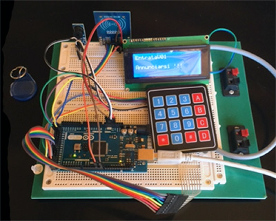
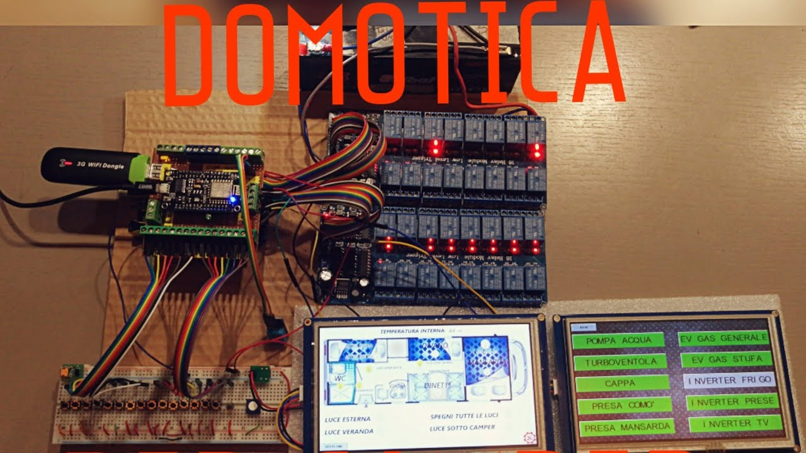
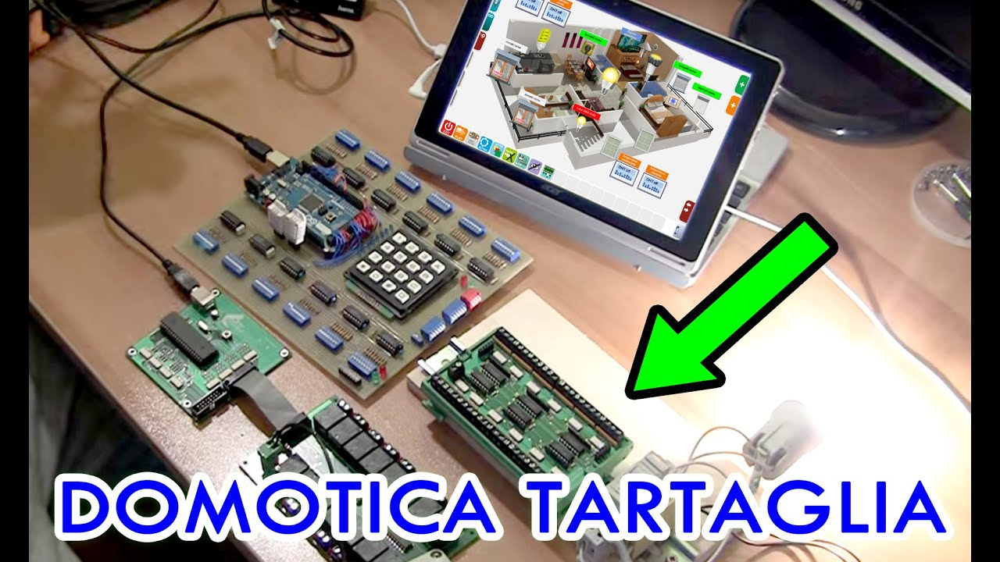

Arduino è una piattaforma hardware composta da una serie di schede elettroniche dotate di un microcontrollore. È stata ideata e sviluppata nel 2005 da alcuni membri dell'Interaction Design Institute di Ivrea come strumento per la prototipazione rapida e per scopi hobbistici, didattici e professionali.
Con Arduino si possono realizzare in maniera relativamente rapida e semplice piccoli dispositivi come controllori di luci, di velocità per motori, sensori di luce, automatismi per il controllo della temperatura e dell'umidità e molti altri progetti che utilizzano sensori, attuatori e comunicazione con altri dispositivi. È abbinato a un semplice ambiente di sviluppo integrato per la programmazione del microcontrollore.
La piattaforma fisica si basa su un circuito stampato che integra un microcontrollore con dei pin connessi alle porte I/O, un regolatore di tensione e, quando necessario, un'interfaccia USB che permette la comunicazione con il computer utilizzato per programmare. A questo hardware viene affiancato un ambiente di sviluppo integrato (IDE) multipiattaforma disponibile per Linux, Apple Macintosh e Windows. Questo software permette anche ai novizi di lavorare con Arduino, in quanto i programmi sono scritti in un linguaggio di programmazione semplice e intuitivo, chiamato Wiring, derivato dal C e dal C++, liberamente scaricabile e modificabile. I programmi in Arduino vengono chiamati sketch. Arduino può essere utilizzato per lo sviluppo di oggetti interattivi stand-alone e può anche interagire, tramite un collegamento e un opportuno codice, con software residenti su computer, come Adobe Flash, Processing, Max/MSP, Pure Data, SuperCollider, Vvvv.
Per implementare il comportamento interattivo, Arduino è fornita di funzionalità di input/output (I/O). Tramite le funzionalità di input, la scheda riceve segnali raccolti da sensori esterni. Il comportamento della scheda è gestito dal microcontroller in base ai valori provenienti dai sensori e alle operazioni determinate dal programma in esecuzione in quel momento sulla scheda. L'interazione con l'esterno avviene attraverso attuatori pilotati dal programma, che fornisce le istruzioni per mezzo dei canali di output in dotazione.
|  |  |  |